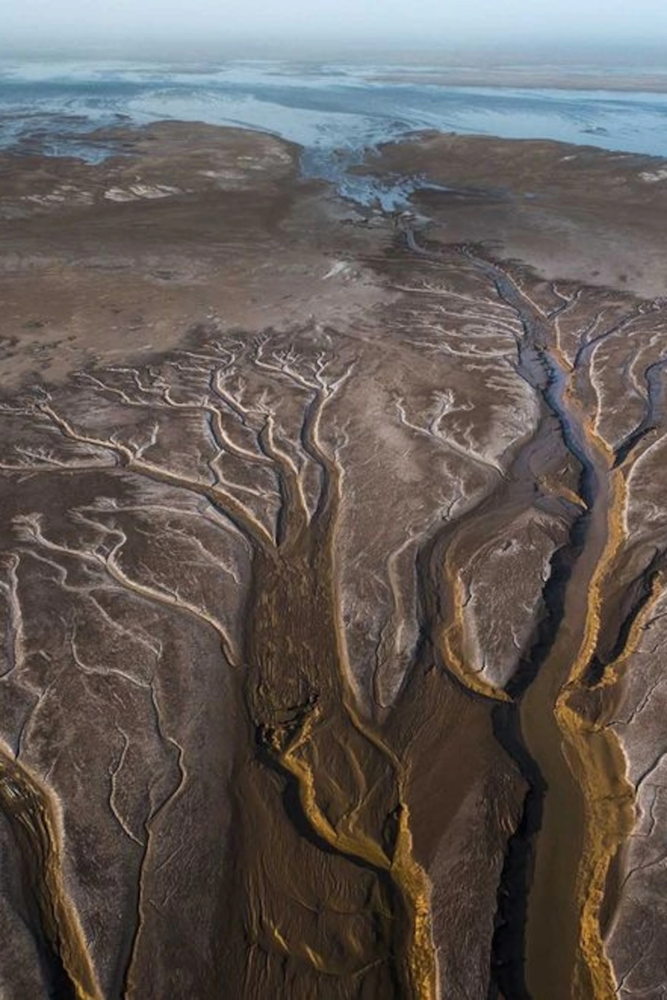
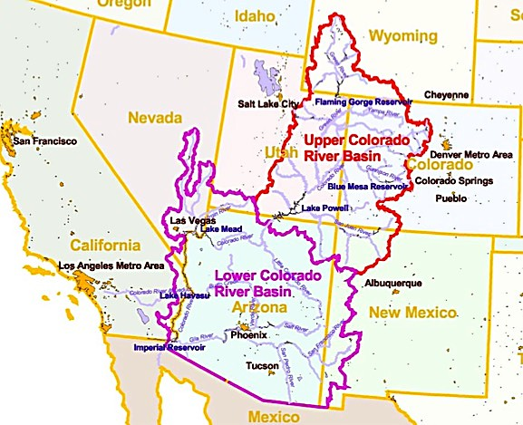

Terminology
The Colorado River originates in Colorado and flows through the southeastern United States before terminating in the river's delta in the Gulf of Mexico.
If you have heard of the Colorado River before, you may know that the river is divided into two main sections. There is an upper basin and a lower basin. The upper basian consists of Colorado, New Mexico, Utah and Wyoming. The lower basin consists of Arizona, California, and Nevada.
1922
Colorado River Compact
The Colorado River Compact was the first big piece of legislation put in place to protect the Colorado River. The Compact was established in 1922 but was not officially ratified until 1944. The Colorado River Compact divided the river into two basins and allocated "7.5 million acre-feet of river water annually" to each.
1928
Hoover Dam
The Hoover Dam began construction during the Great Depression on the border of Arizona and Nevada in 1928. The dam was not completed until 1935. At the time, this was the largest dam in the world and provided a ton of power to the southeastern United States. Today, the Hoover Dam is one of many large dams on the Colorado River.
1944
US and Mexico Treaty
Following tension between the US and Mexican governments, a water treaty was established in 1944. This treaty gave Mexico a "guaranteed annual quantity of 1.5 million acre-feet of water from the Colorado River, plus additional or fewer deliveries in specific circumstances. This treaty also allowed for the construction of the Morelos Dam on the Mexican border which is used to regulate the flow of water into Mexico.
2012
Minute 319
Minute 319 was a revision to the US and Mexico water treaty which was established in 2012. This revision allowed for dedicated pulse flows of water to be allowed through the dams in order to restore river ecosystems in Mexico.